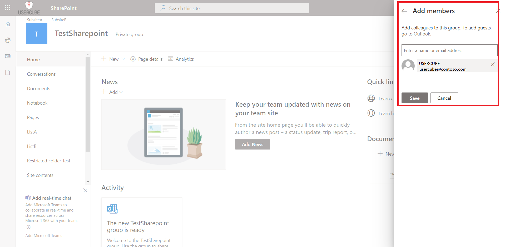
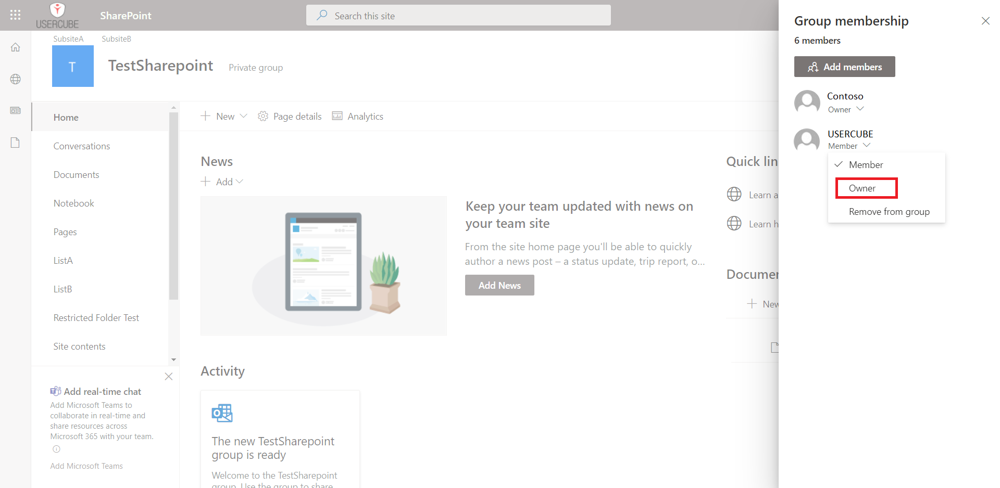

Set up SharePoint's Export and Synchronization
This guide shows how to set up a SharePoint connector to extract data from your SharePoint instance into CSV source files that will be fed to the Synchronization task and to your Identity Manager resource repository. It will focus on registering Identity Manager within the target SharePoint, configuring the connector, and building the job to perform a regularly scheduled synchronization.
Prerequisites
External system configuration
This step is designed to grant Identity Manager a service account to authenticate with the target SharePoint sites. It includes the following substeps:
- Create a service account for Identity Manager in your Microsoft Entra ID (formerly Microsoft Azure AD).
- Go the SharePoint sites which need to be scanned.
- Log in using the organization credentials.
- Go to the Members List in the right corner.
- Click on the Add members button.
- Enter the name of the Identity Manager service account or its email address.

The service account is now a member of the site. However, to scan the site, the service account needs to be owner of the site.
- Go to the Members List in the right corner.
- Under the name of the Identity Manager service account, click on the arrow.
- Choose Owner.

Configuration
This step sets up the Identity Manager Agent in order to use the SharePoint connector and access the SharePoint data.
This guide focuses on the Architecture method. Remember that settings can also be input through architecture.
Connect to the SharePoint instance
In this Connections section, add one new subsection that will contain the credentials for the target SharePoint.
This example connects via the
SharePointExportContosoconnection to the Contoso SharePoint site:appsettings.agent.json { ... "Connections": { ... "SharePointExportContoso": { ... } } }
Input credentials
In the newly created subsection, fill in:
- The Server attribute with the address of the root SharePoint site to scan.
- The Login attribute with the login of the service account created.
- The Password attribute with the password of the service account created.
For example:
appsettings.agent.json { ... "Connections": { ... "SharePointExportContoso": { "Server": "https://contoso.sharepoint.com/", "Login": "usercube.service@contoso.com", "Password": "19f23f48379d50a9a50b8c" } } }
For pedagogical reasons, this guide focuses on the simplest way to set up the export, but it's not the most secure. Hence it is strongly recommended that you protect credentials using Azure Key Vault or Cyber Ark in a production environment.
Netwrix Identity Manager (formerly Usercube) recommends completing this guide once, testing the configuration, and only then, switching to a more secure way of storing credentials.
Set up export files
The export generates CSV source files that will be fed to the Upward Data Synchronization task.
The target path for these files can be set up using the following settings:
appsetings.agent > Connections > SharePointExportContoso > OutputDirappsetings.agent > Connections > SharePointExportContoso > FileNamePrefix
Example
appsettings.agent.json
{
...
"Connections": {
...
"SharePointExportContoso": {
"Server": "https://contoso.sharepoint.com/",
"Login": "usercube.service@contoso.com",
"Password": "19f23f48379d50a9a50b8c"
}
}
}
SharePoint sites
Different kinds of SharePoint sites exist. We will describe here the different cases that the integration team might encounter and how to handle them.
Root site with subsites
A root site has a URL like https://contoso.sharepoint.com and can have subsites. For example, the subsite Finance has a URL like https://contoso.sharepoint.com/Finance. Subsites can also have subsites.
To scan the root site and the subsite tree, the root site must be specified in the Server attribute.
Retrieved users can be assigned to/removed from all groups found, but cannot be created. To create a user account, you need to create it in the associated Microsoft Entra ID: it will automatically create a SharePoint user account.
Multiple sites
A SharePoint can also have other sites which are not subsites of the root site. For example, the site ProjectTeam has a URL like https://contoso.sharepoint.com/sites/ProjectTeam.
These sites can't be scanned from the root site by using the Server attribute.
To scan these sites, you have to export their URL from SharePoint in a CSV file and use the CsvUrls attribute in the settings.
Example
appsettings.agent.json
{
...
"Connections": {
...
"SharePointExportContoso": {
"Server": "https://contoso.sharepoint.com/",
"Login": "usercube.service@contoso.com",
"Password": "19f23f48379d50a9a50b8c"
"CsvUrls": "C:/Usercube/Temp/ExportOutput/SP_otherSites.csv�URL�,"
}
}
}
In this example, C:/Usercube/Temp/ExportOutput/SP_otherSites.csv is the path of the exported CSV file, URL is the column name of the URLs, and , is the separator used in the file. The character � is used to separate the three data items.
The CSV file containing the URLS can be generated with two methods:
- Go to
https://contoso-admin.sharepoint.comof your SharePoint site, in the menu Sites > Active sites and click on the Export button above the table. - Use a script with the SharePointOnlinePowerShell commands, specifically Get-SPO Site.
These sites are not synchronized with the root site. Users present in a site are not necessarily present in the others. You can only assign users to a SharePoint group, on condition that they are already members of this site. You can't use the SharePoint connector to make a user a member of this kind of site. Depending on the system you are working on, you could achieve this by using the associated Microsoft Entra ID or the system generating these SharePoint sites (for example, Microsoft Teams can create an associated SharePoint site for each Teams Group).
Build the Connector
Declare a connector
To be used for export and fulfill tasks, a connector has to be declared in the applicative configuration and linked to an Agent. See the Toolkit for XML Configuration topic for additional information.
It is strongly recommended that the applicative configuration be stored in the working directory Conf folder as a set of xml files organized by connector. See the
Create a Working Directory
topic for additional information.
-
In the
Conffolder, create aSharePointdirectory. -
In the
SharePointdirectory, create aSharePoint Connector.xmlfile.This file should contain the declaration of the connector and the associated Entity Model.
-
Use the Connector element to declare the connector with the following attributes:
- Identifier identifies this connector in the applicative configuration. See the Toolkit for XML Configuration topic for additional information. It is strongly recommended to use a meaningful name such as
SharePoint. If several connections to several SharePoint targets are possible, only one SharePoint Connector per Agent is used. - DisplayName_Li, i ? [1..16] are used in the UI.
- Agent is the identifier of the Agent that runs this connector's export task. The Agent's identifier can be found in the agent's appsettings.agent configuration set > OpenId > AgentIdentifier setting attribute.
- Identifier identifies this connector in the applicative configuration. See the Toolkit for XML Configuration topic for additional information. It is strongly recommended to use a meaningful name such as
-
Don't forget the
<?xml>and<ConfigurationFile>elements (see example below).
This example declares the
SharePointconnector on theLocalagent:Conf/SharePoint/SharePoint Connector.xml <?xml version="1.0" encoding="utf-8"?><ConfigurationFile xmlns:xsi="http://www.w3.org/2001/XMLSchema-instance" xmlns:xsd="http://www.w3.org/2001/XMLSchema" xmlns="urn:schemas-usercube-com:configuration"> ... <Connector Identifier="SharePoint" DisplayName_L1="SharePoint" Agent="Local"/> <Connection Identifier="SharePointExportContoso" Connector="SharePoint" DisplayName_L1="SharePoint" Package="Usercube.SharePoint@0000001" /> ... </ConfigurationFile>
Build the entity model
The exported data to be written to the resource repository must be aligned with the Entity Model. See the Identity Management topic for additional information.
The Entity Model should match as closely as possible the structure of the SharePoint data relevant for Identity Manager. It is designed by analyzing the SharePoint data structure, and describing said data with Entity Model and an Entity Association .
Eventually, it is up to the integration team to design the Entity Model that best serves the Assignment Policy needs. It will be refined iteratively throughout the project phase.
A good starting point for the Entity Model is to mirror the shape of the exported SharePoint objects. This guide provides a few examples that can serve this purpose.
Write the entity model
The Entity Model for the SharePoint connector is written in the applicative configuration.
See the Toolkit for XML Configuration topic for additional information. It is strongly recommended to write the connector to the newly created Conf/SharePoint/SharePoint Connector.xml file.
Write entity types
Declaring an Entity Model is achieved with the <EntityType> tag and the following attributes:
- Identifier is the entity type's name. It must be unique among the entity types. It is strongly recommended to prefix this name with the connector's name. An example for SharePoint is
SharePoint_directoryObject. - DisplayName_Li, i ? [1..16] are used in the UI to identify this Entity Model for the end-user. DisplayName_L1 is the name of the entity type in language number one. If this language is English, a good example of value is
SharePoint - Object.
Example
Conf/SharePoint/SharePoint Connector.xml
...
<EntityType Identifier="SharePoint_Entity" DisplayName_L1="SharePoint_Entity"></EntityType>...
The SharePoint object attributes are modeled by Entity Model, with the <Property> tags declared as children of the <EntityType>.
Remember that there are several kinds of properties: scalar and navigation. Scalar properties can be defined to represent scalar attributes such as city, country or companyName. represent associations such as group memberships. See the Entity Model topic for additional information.
The main attributes of the <Property> tag are the following:
-
Identifier identifies the property with a mandatory unique name. It must be unique among the entity properties for this entity type.
-
DisplayName_Li, i ? [1..16] are used in the UI.
-
Type defines the type of the property. A scalar property type is chosen among
String,Bytes,Int16,Int32,Int64,DateTime,Bool,Guid,Double,Binary,Byte, andOption. The navigation property type isForeignKey. -
TargetColumnIndex defines in which column of the resource table the property is stored. See more details about Target Column Index. See the Entity Model topic for additional information.
Example
Conf/SharePoint/SharePoint Connector.xml
...
<EntityType Identifier="SharePoint_Entity" DisplayName_L1="SharePoint - Entity"> <Property Identifier="Collection" DisplayName_L1="Collection" TargetColumnIndex="9" Type="String" /> <Property Identifier="EntityId" DisplayName_L1="Id" IsKey="true" TargetColumnIndex="0" Type="String" /> <Property Identifier="SharePointId" DisplayName_L1="SharePointId" TargetColumnIndex="10" Type="Int64" /> <Property Identifier="Name" DisplayName_L1="Name" TargetColumnIndex="1" Type="String" /> <Property Identifier="Description" DisplayName_L1="Description" TargetColumnIndex="8" Type="String" /> <Property Identifier="PrincipalType" DisplayName_L1="PrincipalType" TargetColumnIndex="2" Type="String" /> <Property Identifier="Email" DisplayName_L1="Email" TargetColumnIndex="7" Type="String" /> <Property Identifier="IsEmailAuthenticationGuestUser" DisplayName_L1="IsEmailAuthenticationGuestUser" TargetColumnIndex="3" Type="String" /> <Property Identifier="IsSiteAdmin" DisplayName_L1="IsSiteAdmin" TargetColumnIndex="4" Type="String" /> <Property Identifier="IsShareByEmailGuestUser" DisplayName_L1="IsShareByEmailGuestUser" TargetColumnIndex="5" Type="String" /> <Property Identifier="Member" DisplayName_L1="Group Members" Type="ForeignKey" /> <Property Identifier="Group" DisplayName_L1="Groups" Type="ForeignKey" /> <Property Identifier="RoleAssignment" DisplayName_L1="Role Assignement" Type="ForeignKey" /> </EntityType> <EntityType Identifier="SharePoint_Role" DisplayName_L1="SharePoint - Role"> <Property Identifier="Collection" DisplayName_L1="Collection" TargetColumnIndex="3" Type="String" /> <Property Identifier="RoleId" DisplayName_L1="Id" IsKey="true" TargetColumnIndex="5" Type="String" /> <Property Identifier="Name" DisplayName_L1="Name" TargetColumnIndex="4" Type="String" /> <Property Identifier="Description" DisplayName_L1="Description" TargetColumnIndex="1" Type="String" /> <Property Identifier="Permissions" DisplayName_L1="Permissions list" TargetColumnIndex="2" Type="String" /> <Property Identifier="RoleAssignment" DisplayName_L1="Role Assignement" Type="ForeignKey" /> </EntityType> <EntityType Identifier="SharePoint_Object" DisplayName_L1="SharePoint - Securable Object"> <Property Identifier="Key" DisplayName_L1="Key" IsKey="true" TargetColumnIndex="1" Type="String" /> <Property Identifier="Collection" DisplayName_L1="Collection" TargetColumnIndex="3" Type="String" /> <Property Identifier="Level" DisplayName_L1="Level" TargetColumnIndex="4" Type="String" /> <Property Identifier="Label" DisplayName_L1="Label" TargetColumnIndex="2" Type="String" /> <Property Identifier="ParentKey" DisplayName_L1="Parent" TargetColumnIndex="129" Type="ForeignKey" /> <Property Identifier="Objects" DisplayName_L1="Children" Type="ForeignKey" /> <Property Identifier="ScanStatus" DisplayName_L1="ScanStatus" TargetColumnIndex="5" Type="String" /> <Property Identifier="HasUniqueRoleAssignments" DisplayName_L1="HasUniqueRoleAssignments" TargetColumnIndex="6" Type="String" /> <Property Identifier="RoleAssignment" DisplayName_L1="Role Assignement" Type="ForeignKey" /> <Property Identifier="Inheritance" DisplayName_L1="Inherits entitlements from" Type="ForeignKey" TargetColumnIndex="128" /> <Property Identifier="GiveRights" DisplayName_L1="Gives entitlements to" Type="ForeignKey" /> </EntityType> <EntityType Identifier="SharePoint_RoleAssignment" DisplayName_L1="SharePoint - Role Assignement"> <Property Identifier="Collection" DisplayName_L1="Collection" TargetColumnIndex="3" Type="String" /> <Property Identifier="Key" DisplayName_L1="Key" IsKey="true" TargetColumnIndex="5" Type="String" /> <Property Identifier="Entity" DisplayName_L1="Entity" Type="ForeignKey" TargetColumnIndex="128" /> <Property Identifier="Role" DisplayName_L1="Role" Type="ForeignKey" TargetColumnIndex="129" /> <Property Identifier="Object" DisplayName_L1="Object" Type="ForeignKey" TargetColumnIndex="130" /> </EntityType> ...
In this example, we have created four entity types, each one corresponding to a notion in SharePoint.
Write entity associations
Entity Model types are associated through their navigation properties with Entity Association elements.
Example
Conf/SharePoint/SharePoint Connector.xml
...
<EntityAssociation Identifier="SharePoint_Object_Parent" DisplayName_L1="Parent object" IsProperty1Collection="true" Property1="SharePoint_Object:Objects" Property2="SharePoint_Object:ParentKey" /> <EntityAssociation Identifier="SharePoint_Group_Entity_Id" DisplayName_L1="Entity_Id" IsProperty1Collection="true" IsProperty2Collection="true" Property1="SharePoint_Entity:Member" Property2="SharePoint_Entity:Group" /> <EntityAssociation Identifier="SharePoint_Inheritance_Object" DisplayName_L1="Inheritance_Object" IsProperty1Collection="true" IsProperty2Collection="false" Property1="SharePoint_Object:GiveRights" Property2="SharePoint_Object:Inheritance" /> <EntityAssociation Identifier="SharePoint_Entity_RoleAssignment" DisplayName_L1="SharePoint_RoleAssignment" IsProperty1Collection="false" IsProperty2Collection="true" Property1="SharePoint_RoleAssignment:Entity" Property2="SharePoint_Entity:RoleAssignment"/> <EntityAssociation Identifier="SharePoint_Role_RoleAssignment" DisplayName_L1="SharePoint_RoleAssignment" IsProperty1Collection="false" IsProperty2Collection="true" Property1="SharePoint_RoleAssignment:Role" Property2="SharePoint_Role:RoleAssignment" /> <EntityAssociation Identifier="SharePoint_Object_RoleAssignment" DisplayName_L1="SharePoint_RoleAssignment" IsProperty1Collection="false" IsProperty2Collection="true" Property1="SharePoint_RoleAssignment:Object" Property2="SharePoint_Object:RoleAssignment" /> ...
The exact nature of the IDs are described by the associated Entity Association Mapping .
Notice the format of the Property1 and Property2 xml attributes: the name of the entity type is followed by : and the name of an entity property. It is a
Binding
describing in one expression, the target entity type and property.
Create mapping
The entity type must be mapped property by property to the exported attributes of SharePoint objects (namely, the columns of the CSV source files generated by the export).
The Entity Type Mapping , Entity Association Mapping , and Entity Type Mapping elements serve this purpose.
Entity type mapping
The Entity Type Mapping element maps the scalar properties from the CSV source file to an entity type.
The CSV source file path is written to the ConnectionTable xml attribute. The target entity type name is written to the Identifier xml attribute.
Conf/SharePoint/SharePoint Connector.xml
...
<EntityTypeMapping Identifier="SharePointObject" Connector="SharePoint" ConnectionTable="SharePointExportContoso_Entity"> ...
</EntityTypeMapping> ...
To do so, the entity type mapping element uses the
Entity Type Mapping
element with the <Property> tag. This maps the CSV column from ConnectionColumn to the target EntityType property which is written to the Identifier attribute.
Example
Conf/SharePoint/SharePoint Connector.xml
...
<EntityTypeMapping Identifier="SharePoint_Entity" Connector="SharePoint" ConnectionTable="SharePointExportContoso_Entity"> <Property Identifier="Collection" ConnectionColumn="Collection" /> <Property Identifier="EntityId" ConnectionColumn="Id" IsPrimaryKey="true" /> <Property Identifier="SharePointId" ConnectionColumn="SharePointId" /> <Property Identifier="Name" ConnectionColumn="Name" /> <Property Identifier="Description" ConnectionColumn="Description" /> <Property Identifier="PrincipalType" ConnectionColumn="PrincipalType" /> <Property Identifier="Email" ConnectionColumn="Email" /> <Property Identifier="IsEmailAuthenticationGuestUser" ConnectionColumn="IsEmailAuthenticationGuestUser" /> <Property Identifier="IsSiteAdmin" ConnectionColumn="IsSiteAdmin" /> <Property Identifier="IsShareByEmailGuestUser" ConnectionColumn="IsShareByEmailGuestUser" /> </EntityTypeMapping> <EntityTypeMapping Identifier="SharePoint_Role" Connector="SharePoint" ConnectionTable="SharePointExportContoso_Role" > <Property Identifier="Collection" ConnectionColumn="Collection" /> <Property Identifier="RoleId" ConnectionColumn="Id" IsPrimaryKey="true" /> <Property Identifier="Name" ConnectionColumn="Name" /> <Property Identifier="Description" ConnectionColumn="Description" /> <Property Identifier="Permissions" ConnectionColumn="Permissions" IsMultiValuedProperty="true"/> </EntityTypeMapping> <EntityTypeMapping Identifier="SharePoint_Object" Connector="SharePoint" ConnectionTable="SharePointExportContoso_SecurableObject" > <Property Identifier="Key" ConnectionColumn="Key" IsPrimaryKey="true"/> <Property Identifier="Collection" ConnectionColumn="Collection" /> <Property Identifier="Level" ConnectionColumn="Level" /> <Property Identifier="Label" ConnectionColumn="Label" /> <Property Identifier="ScanStatus" ConnectionColumn="ScanStatus" /> <Property Identifier="HasUniqueRoleAssignments" ConnectionColumn="HasUniqueRoleAssignments" /> </EntityTypeMapping> <EntityTypeMapping Identifier="SharePoint_RoleAssignment" Connector="SharePoint" ConnectionTable="SharePointExportContoso_RoleAssignment" > <Property Identifier="Key" ConnectionColumn="Key" IsPrimaryKey="true"/> <Property Identifier="Collection" ConnectionColumn="Collection" /> </EntityTypeMapping> ...
As a result, after synchronization, the UR_Resource table will be updated from the CSV source file data.
Entity association mapping
The Entity Association Mapping element maps the navigation properties used in Entity Association .
An
Entity Association Mapping
element refers to an
Entity Association
written to the Identifier xml attribute. Then, like
Entity Type Mapping
, it maps column values from a CSV source file to an EntityType property.
Example
Conf/SharePoint/SharePoint Connector.xml
...
<EntityAssociationMapping Identifier="SharePoint_Object_Parent" Column1="ParentKey" Column2="Key" Connector="SharePoint" ConnectionTable="SharePointExportContoso_SecurableObject" EntityPropertyMapping1="SharePoint_Object:Key" EntityPropertyMapping2="SharePoint_Object:Key" /> <EntityAssociationMapping Identifier="SharePoint_Group_Entity_Id" Column1="Group_Id" Column2="Entity_Id" Connector="SharePoint" ConnectionTable="SharePointExportContoso_GroupMember" EntityPropertyMapping1="SharePoint_Entity:EntityId" EntityPropertyMapping2="SharePoint_Entity:EntityId" /> <EntityAssociationMapping Identifier="SharePoint_Inheritance_Object" Column1="Inheritance_Key" Column2="SecurableObject_Key" Connector="SharePoint" ConnectionTable="SharePointExportContoso_SecurableObjectRightInheritance" EntityPropertyMapping1="SharePoint_Object:Key" EntityPropertyMapping2="SharePoint_Object:Key" /> <EntityAssociationMapping Identifier="SharePoint_Entity_RoleAssignment" Column1="Key" Column2="Entity_Id" Connector="SharePoint" ConnectionTable="SharePointExportContoso_RoleAssignment" EntityPropertyMapping1="SharePoint_RoleAssignment:Key" EntityPropertyMapping2="SharePoint_Entity:EntityId" /> <EntityAssociationMapping Identifier="SharePoint_Role_RoleAssignment" Column1="Key" Column2="Role_Id" Connector="SharePoint" ConnectionTable="SharePointExportContoso_RoleAssignment" EntityPropertyMapping1="SharePoint_RoleAssignment:Key" EntityPropertyMapping2="SharePoint_Role:RoleId" /> <EntityAssociationMapping Identifier="SharePoint_Object_RoleAssignment" Column1="Key" Column2="SecurableObject_Key" Connector="SharePoint" ConnectionTable="SharePointExportContoso_RoleAssignment" EntityPropertyMapping1="SharePoint_RoleAssignment:Key" EntityPropertyMapping2="SharePoint_Object:Key" /> ...
Display
This step focuses on configuring a nice display for the synchronized list of resources in the UI.
Nav
A Menu Item can be added to include a link to the resources list in the left menu on the UI home screen.
Parent menu item
It is strongly recommended that you gather synchronized resources menu items under parent menu items. This is usually declared in the Nav.xml file in the configuration root folder.
Example
Conf/Nav.xml
...
<MenuItem Identifier="Nav_Connectors" DisplayName_L1="Connectors" DisplayName_L2="Connecteurs" ParentMenuItem="Nav" />...
Child menu item
It is strongly recommended to use a new SharePoint Nav.xml file in the SharePoint connector's folder to add the SharePoint objects menu item.
Example
Conf/SharePoint/SharePoint Nav.xml
...
<MenuItem Identifier="Nav_Connectors_SharePoint_Entity" DisplayName_L1="SharePoint Entities" DisplayName_L2="Entit�s Sharepoint" EntityType="SharePoint_Entity" ParentMenuItem="Nav_Connectors" />...
This example adds a new menu item under the Nav_Connectors menu item declared in the root Nav.xml file. This new menu item gives access to the list of synchronized SharePoint entities.
Display
It is strongly recommended that the display configuration be written to a new SharePoint UI.xml file in the SharePoint connector's folder.
Display entity type
The Display Entity Type describes how a single resource should be displayed.
Example
Conf/SharePoint/SharePoint UI.xml
...
<DisplayEntityType Identifier="SharePoint_Entity"> <Property OutputType="BasicCollection" Identifier="Member" /> <Property OutputType="BasicCollection" Identifier="Group" /> <Property OutputType="BasicCollection" Identifier="RoleAssignment" /></DisplayEntityType><DisplayEntityType Identifier="SharePoint_Role"> <Property OutputType="BasicCollection" Identifier="RoleAssignment" /></DisplayEntityType><DisplayEntityType Identifier="SharePoint_Object"> <Property OutputType="BasicCollection" Identifier="ParentKey" /> <Property OutputType="BasicCollection" Identifier="Objects" /> <Property OutputType="BasicCollection" Identifier="RoleAssignment" /> <Property OutputType="BasicCollection" Identifier="Inheritance" /> <Property OutputType="BasicCollection" Identifier="GiveRights" /></DisplayEntityType><DisplayEntityType Identifier="SharePoint_RoleAssignment"> <Property OutputType="BasicCollection" Identifier="Entity" /> <Property OutputType="BasicCollection" Identifier="Role" /> <Property OutputType="BasicCollection" Identifier="Object" /></DisplayEntityType>...
The scalar properties require no configuration: they are automatically displayed. The only information that the Display Entity Type adds here, is that the property BasicCollection is a navigation property. An eye icon will be displayed to take you directly to the matching page.
Display table
Display Table elements describe how a list of resources should be displayed.
The Display Table contains a list of display table column elements that identify which properties should be included in the list display.
Example
Conf/SharePoint/SharePoint UI.xml
...
<DisplayTable Identifier="SharePoint_Entity" EntityType="SharePoint_Entity" DisplayTableDesignElement="resourcetable" IsEntityTypeDefault="true"> <Column DefaultSortPriority="1" DisplayBinding="Name" IsDisplayInSummaryView="true" IsResizable="true" IsSortable="true" CanBeFiltered="true" ColumnSize="4" /> <Column DisplayBinding="Email" IsDisplayInSummaryView="true" IsResizable="true" IsSortable="true" CanBeFiltered="true" ColumnSize="2" /> <Column DisplayBinding="PrincipalType" IsDisplayInSummaryView="true" IsResizable="true" IsSortable="true" CanBeFiltered="true" ColumnSize="2" /></DisplayTable>...
Internal display name
An InternalDisplayName can also be declared as an Entity Model. The InternalDisplayName is used in several UI screens to identify a resource for the user.
With no custom InternalDisplayName, a default value is used (instead of the first property of the identity) containing the string "name". If no such property is found, the first declared property of the entity type is used.
Example
Conf/SharePoint/SharePoint Connector.xml
...
<EntityPropertyExpression Identifier="SharePointObject_Entity_InternalDisplayName" Expression="C#:resource:return resource.Name ?? resource.Email ?? resource.Id.ToString();" EntityType="SharePoint_Entity" Property="InternalDisplayName" /> <EntityPropertyExpression Identifier="SharePointObject_Role_InternalDisplayName" Expression="C#:resource:return resource.Name ?? resource.RoleId.ToString();" EntityType="SharePoint_Role" Property="InternalDisplayName" /> <EntityPropertyExpression Identifier="SharePointObject_Object_InternalDisplayName" Expression="C#:resource:return resource.Label ?? resource.Key.ToString();" EntityType="SharePoint_Object" Property="InternalDisplayName" /> <EntityPropertyExpression Identifier="SharePointObject_RoleAssignment_InternalDisplayName" Expression="C#:resource:return resource.Role.Name + " - " + resource.Entity.Name + " - " + resource.Object.Label ?? resource.Key.ToString();" EntityType="SharePoint_RoleAssignment" Property="InternalDisplayName" /> ...
This example adds the InternalDisplayName to the SharePoint_Entity, SharePoint_Role, SharePoint_Object and SharePoint_RoleAssignment entity types to be used by the UI.
Permissions
This step focuses on setting up permissions for Identity Manager's end-users granting them access to the connector.
The Access Control Rule and Access Control Rule elements define AccessControlPermission for end-user profiles to read and write the connector's data (such as resources of a given entity type). It is used by the UI when displaying data such as resources and available roles.
It is strongly recommended that permissions be written to a new file. For example, the administrator profile permissions can be written to the SharePoint Profile Administrator.xml file.
Example
Conf/SharePoint/SharePoint Profile Administrator.xml
...
<AccessControlRule Profile="Administrator" EntityType="ResourceType" Identifier="Administrator_ResourceTypeSelector_resourceType_SharePoint" DisplayName_L1="Administrator_ResourceTypeSelector_resourceType_SharePoint"> <Entry Permission="/Custom/Resources/SharePoint_Entity/View" CanExecute="true" /> <Entry Permission="/Custom/Resources/SharePoint_Entity/ResetPassword" CanExecute="true" /> </AccessControlRule> <AccessControlRule Profile="Administrator" EntityType="Category" Identifier="Administrator_ResourceTypeSelector_category_SharePoint" DisplayName_L1="Administrator_ResourceTypeSelector_category_SharePoint"> <Entry Permission="/Custom/Resources/SharePoint_Entity/View" CanExecute="true" /></AccessControlRule>...
This example sets permissions for the Administrator profile.
It entitles an administrator to display SharePoint_Entity resource and role categories from the UI.
Jobs
Construction
It is strongly recommended to write Jobs associated with the SharePoint connector to the Conf/SharePoint/SharePoint Jobs.xml file.
A job is declared with the <Job> xml element. It contains Tasks that perform the main steps and other related operations.
Example
Conf/SharePoint/SharePoint Jobs.xml
...
<Job Identifier="SharePoint_Synchronization_Delta" DisplayName_L1="10: SharePoint- Synchronization (delta)" DisplayName_L2="10: SharePoint - Synchronisation (delta)" Agent="Local"> ...
</Job>...
Notice the Agent attribute that contains the name of the Agent which executes the Job. This attribute is mandatory for a Job containing Tasks executed agent-side, even if a unique local Agent exists. See the appsettings.agent topic for additional information.
Components
The Upward Data Synchronization job includes three steps:
- Export
- Prepare-Synchro
- Synchro
These three steps are all contained in a which allows the generation of the Incremental Synchronization configuration. See the Create Connector Synchro Incremental topic for additional information.
Example
Conf/SharePoint/SharePoint Jobs.xml
...
<CreateConnectorSynchroIncremental Connector="SharePoint" DisplayName_L1="SharePoint Synchronization (delta)" DisplayName_L2="Synchronisation SharePoint (delta)"> <OpenIdIdentifier Identifier="Job"/> </CreateConnectorSynchroIncremental>...
Permissions
The execution of a Job entails execution of Tasks, reading/writing to the Database and sending files over to the Server. These operations are protected by an authorization mechanism.
To complete a Job, the Agent, via the Usercube-Invoke-Job uses:
- a
Profile
associated with the Job itself, to read/write:
UJ_JobsandUJ_Taskstables in a list of tasksUJ_JobInstancestables in the progress report
- a Profile for each Task, to read/write
UJ_TaskInstancestables (Progress Report) and perform other operations such as sending export files over to the Server.
Each Profile must be assigned the right permissions for the associated Job or Task to perform.
Every request from Agent to Server within the execution of a Job needs to be authenticated with an OpenIdClient Connect ClientId/Secret pair, linked to a Profile.
Create a profile
Here, we focus on creating one profile, used by the Job and every Task of the Job.
Conf/Profile AgentJob.xml
...
<Profile Identifier="AgentSynchro" DisplayName_L1="Agent Synchro" />...
As the Principle of Least Privilege states, Netwrix Identity Manager (formerly Usercube) strongly recommends that you create a
Profile
to be used during the Synchronization jobs which will be different from the one used during the Provisioning job. This contributes to separating access rights.
The same principle applied even more rigorously would make Identity Manager create one profile per Task. It isn't necessary as most Synchronization tasks require the same permissions.
Grant synchronization access rights to the profile
For an Agent to launch server-side Tasks from the Job via the Usercube-Invoke-Job tool, the profile linked to these tasks and used by the tool should be authorized to execute said tasks.
Server-side Tasks for a simple Synchronization job usually are:
- Prepare-Synchronization
- Synchronization
Required permissions are:
View Tasks
/Jobs/Task/Query
Progress Report
/Jobs/JobInstance/Query/Jobs/JobInstance/Update/Jobs/TaskInstance/Query/Jobs/TaskInstance/Update
Synchronization and Prepare-Synchronization
/Connectors/Connector/Query/Connectors/SynchronizeSession
Granting access can be done via the SynchronizationAccessControlRules and the Job View Access Control Rules .
The following examples should be written to Conf/Profile AgentSychro.xml.
Example
The following example entitles the administrator to run any Synchronization job:
Grant end-users permissions to run jobs from the UI
In addition, for end-users to be able to launch a job from the UI, they must be assigned a profile with the following access rights:
/Jobs/RunJob/Launch
This can be done via the Job Execution Access Control Rules scaffolding.
Example
Declare usable ClientId/Secret pairs in the configuration
An Agent's a
Profile
is associated with a ClientId/Secret pair used by the Agent to authenticate to the Server.
Usable ClientId/Secret pairs are written to the database from the xml configuration using the
OpenIdClient
xml element.
It is strongly recommended to write the <OpenIdClient> xml element to a new or existing OpenIdClients.xml file in the configuration root folder.
The ClientId/Secret pair hence created must be associated with the profile created or updated in the previous step, via the Profile attribute.
Example
The following example creates a ClientId/Secret pair to be used by the Agent to authenticate to the Server and complete Jobs. The secret is hashed with the
Usercube-New-OpenIDSecret
tool.
Conf/OpenIdClients.xml
...
<OpenIdClient Identifier="Job" HashedSecret="K7gNU3sdo+Op8wNhqoVWhr5v6s1xYv72ol/pe/Unols=" DisplayName_L1="ClientId for Jobs" DisplayName_L2="ClientId pour les jobs" Profile="Administrator" />
...
Conf/OpenIdClients.xml
...
<OpenIdClient Identifier="Job" HashedSecret="K7gNU3sdo+Op8wNhqoVWhr5v6s1xYv72ol/pe/Unols=" DisplayName_L1="ClientId for Jobs" DisplayName_L2="ClientId pour les jobs" Profile="Administrator" />
...
Set up the Agent to use ClientId/Secret pairs
The ClientId/Secret pairs that the Agent may use are written to the Agent's appsettings.agent technical configuration set.
The ClientId of such ClientId/Secret pairs can then be used as a value in a Task OpenIdClient attribute.
Pairs written in the OpenIdClient section may be used by Tasks.
The Job itself uses the DefaultOpenIdClient value.
This example sets the "Job/secret" pair to be used by tasks and jobs:
appsettings.agent.json { ... "OpenId":{ "OpenIdClients": { "Job": "secret" }, "DefaultOpenIdClient": "Job" } }
Job launch
Scheduling the job execution can rely either on Identity Manager's scheduler or an external scheduler.
With Scheduler
Use the Job attribute.
This example uses Identity Manager's scheduler to execute the
SharePoint_Synchronization_Deltajob every fifteen minutes:Conf/SharePoint/SharePoint Jobs.xml <Job Identifier="SharePoint_Synchronization_Delta" CronTabExpression="*/15 * * * *quot; DisplayName_L1="10: SharePoint - Synchronization (delta)" DisplayName_L2="10: SharePoint - Synchronisation (delta)" Agent="Local"> ... </Job>
For more details about checking Crontab expressions, see the crontab.guru website.
With an external scheduler
An external scheduler would rely on the Usercube-Invoke-Job tool.
Example
The following command can be scheduled. It executes the SharePoint_Synchronization_Delta job using the "Job/Secret" authentication pair to connect to the Identity Manager Server at http://usercube.contoso.com.
./Usercube-Invoke-Job.exe -j "SharePoint_Synchronization_Delta" --api-secret secret --api-client-id Job --api-url "http://usercube.contoso.com"
Validation
Deploy configuration
The configuration is written to the database using the Deploy Configuration Task .
Test
The Synchronization job should be found in the UI, under the Job Execution menu, with the name input in the Job's DisplayName_Li attribute.
From there, it can be launched and debugged (if needed).
After execution, SharePoint Objects resources should be in the UR_Resources table of the SQL Server database.